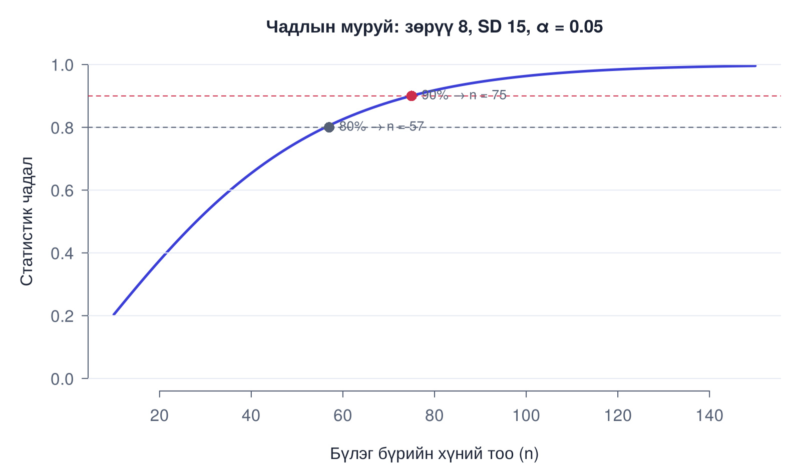

Түүврийн хэмжээ ба статистик чадал
Data Analysis Methods · Судалгааны төлөвлөлт
Түүврийн хэмжээ ба статистик чадал
Sample size & power calculation
Эмнэлзүйн хувьд чухал ялгаа үнэхээр байгаа бол түүнийг илрүүлэх хангалттай магадлалтай (ихэвчлэн 80–90%) байхын тулд хэдэн оролцогч хэрэгтэйг судалгаа эхлэхээс өмнө тооцно. Ёс зүйн хороо, тэтгэлэг, сэтгүүл бүгд үүнийг шаарддаг.
- Төлөвлөлт
- α, 1 − β, нөлөөний хэмжээ
pwr
Товч мэдээлэл
Хэзээ хэрэглэх вэ?
Судалгааны протокол бичих үед. Тооцоо нь гол үр дагавар болон түүнийг шинжлэх гол статистик арга дээр суурилна.
Тооцоонд хэрэгтэй оролт
R дээр хийх
library(pwr)
# 1) Хоёр бүлгийн дундаж: зөрүү 8, SD 15 → d = 8/15 = 0.53
power.t.test(delta = 8, sd = 15, sig.level = 0.05, power = 0.90)
# эсвэл: pwr.t.test(d = 0.53, power = 0.90)
# 2) Хоёр бүлгийн хувь: 20% → 10%
power.prop.test(p1 = 0.20, p2 = 0.10, power = 0.80)
# эсвэл Cohen-ийн h-аар:
pwr.2p.test(h = ES.h(0.20, 0.10), power = 0.80)
# 3) ANOVA, 3 бүлэг, дунд нөлөө (f = 0.25)
pwr.anova.test(k = 3, f = 0.25, power = 0.80)
# 4) Корреляци r = 0.3
pwr.r.test(r = 0.3, power = 0.80)
# 5) Хасагдалт 15% гэж үзээд нэмэгдүүлэх
n <- 75; ceiling(n / (1 - 0.15))
# Хугацаа-үйл явдлын (Cox / log-rank) тооцоонд: powerSurvEpi эсвэл gsDesign багцЖишээ: бодит гаралт ба тайлбар
Асуулт. Төлөвлөж буй судалгааны гурван хувилбарт хэдэн оролцогч хэрэгтэй вэ?
Доорх гаралтыг сайтын жишээ өгөгдөл дээр R 4.3.3-аар жинхэнээр нь ажиллуулж гаргасан. Кодыг хуулж өөрийн компьютер дээр ажиллуулбал яг ижил үр дүн гарна.
> power.t.test(delta = 8, sd = 15, sig.level = 0.05, power = 0.90)
Two-sample t test power calculation
n = 74.85385
delta = 8
sd = 15
sig.level = 0.05
power = 0.9
alternative = two.sided
NOTE: n is number in *each* group
> power.prop.test(p1 = 0.20, p2 = 0.10, power = 0.80)
Two-sample comparison of proportions power calculation
n = 198.9634
p1 = 0.2
p2 = 0.1
sig.level = 0.05
power = 0.8
alternative = two.sided
NOTE: n is number in *each* group
> pwr::pwr.anova.test(k = 3, f = 0.25, power = 0.80)
Balanced one-way analysis of variance power calculation
k = 3
n = 52.3966
f = 0.25
sig.level = 0.05
power = 0.8
NOTE: n is number in each group
Гаралтыг хэрхэн унших вэ?
n = 74.85385Дунджийн 8 мм м.у.б зөрүүг (SD 15) 90% чадалтай илрүүлэхэд бүлэг бүрт 74.9 → дээш бөөрөнхийлж 75 хүн хэрэгтэй.NOTE: n is number in *each* groupЭнэ нь бүлэг бүрийн тоо. Нийт түүвэр = 2 × 75 = 150.power.prop.test: n = 198.9634Хувь 20%-иас 10% болж буурахыг 80% чадалтай илрүүлэхэд бүлэг бүрт 199 хүн хэрэгтэй. Хувийн ялгааг илрүүлэхэд илүү олон хүн шаардлагатай.pwr.anova.test: n = 52.39663 бүлэгтэй ANOVA-д дунд зэргийн нөлөөг (f = 0.25) илрүүлэхэд бүлэг бүрт 53, нийт 159 хүн хэрэгтэй.
Дүгнэлт (тайлагнах хэлбэрээр). Бүлэг бүрт 75 хүн шаардлагатай. Хасагдалтыг 15% гэж тооцвол бүлэг бүрт ⌈75 / 0.85⌉ = 89, нийт 178 оролцогч хамруулна.
Цэс дээр хийх (SPSS / G*Power)
Үр дүнг тайлбарлах
- n: R-ийн
power.t.testнь бүлэг бүрт хэрэгтэй тоог гаргадаг. Нийт түүвэр = n × бүлгийн тоо. - Бүхэл тоо руу дээш бөөрөнхийлж, хасагдалтыг тооцож нэмнэ.
- Тооцоонд хэрэглэсэн бүх оролт (α, чадал, ялгаа, SD, эх сурвалж) протоколд бичигдсэн байх ёстой. Ингэснээр бусад хүн давтан тооцох боломжтой.
Тайлагнах жишээ
Түгээмэл алдаа
Өөр аргууд
- Хамааралгүй түүврийн t-тест — хамгийн түгээмэл тооцооны суурь.
- Хи-квадрат тест — хоёр хувийг харьцуулах судалгаанд.
- Бүх аргад хамаарах суурь ойлголт — нөлөөний хэмжээ, I ба II төрлийн алдаа.